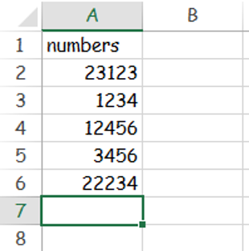
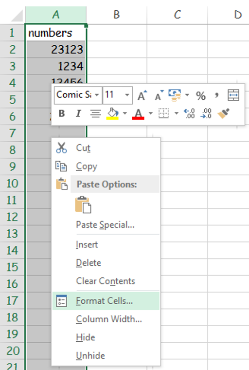
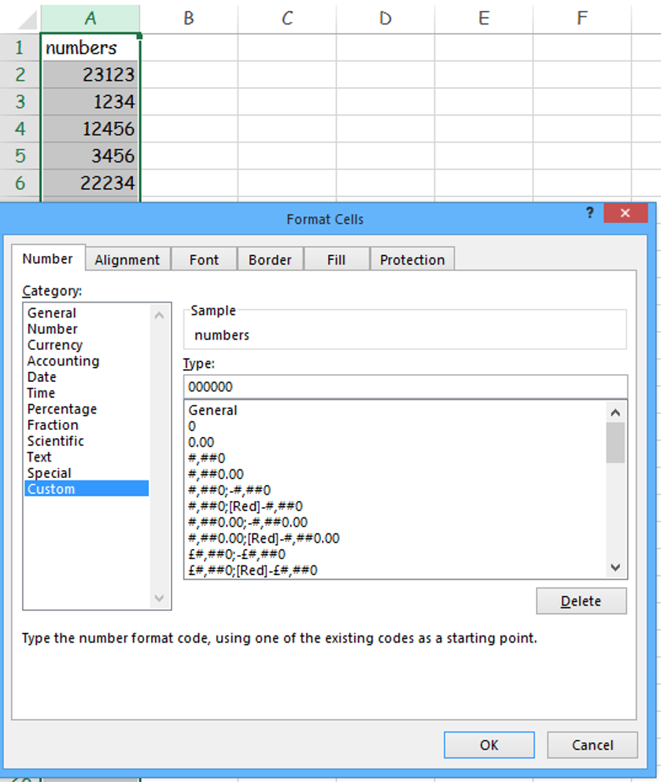
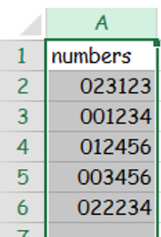

Add 0s to the beginning of numbers in a column
1. Click on A to highlight the whole column

2. Right click in the highlighted area and press Format Cells

3. Click custom, add in the zeros to the right, I added in six 0s. Then press ok.

4. See image below of six digit numbers
